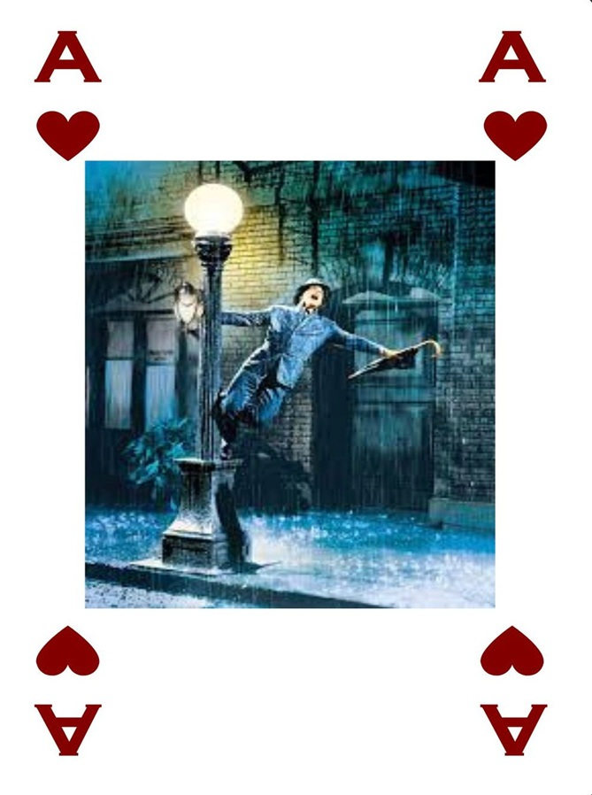

The Queen of Art's, Deck of Inspirations

Jack Of Shades - Painters

Ace of Marble - Sculptors

King of Roles - Actors
Queen of Notes - Musicians
Jack of Cuts - Directors
What is the Deck of Insiprations?
The Deck of Insiprations is a curated database of performers, artists, and innovators who have profoundly influenced director Sarah Jane throughout her journey as an artist and her role as a teacher. Their teachings, creativity, and groundbreaking work serve as a foundation for the workshops and educational offerings at the House of Wild Cards, ensuring their legacy inspires new generations of creators. This resource celebrates the artistic excellence and innovation that permeate every aspect of the House’s programming.
All Images and Content Copyright ©"Sarah Jane Ryan" 2024